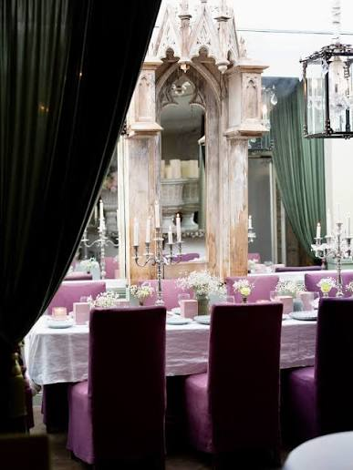
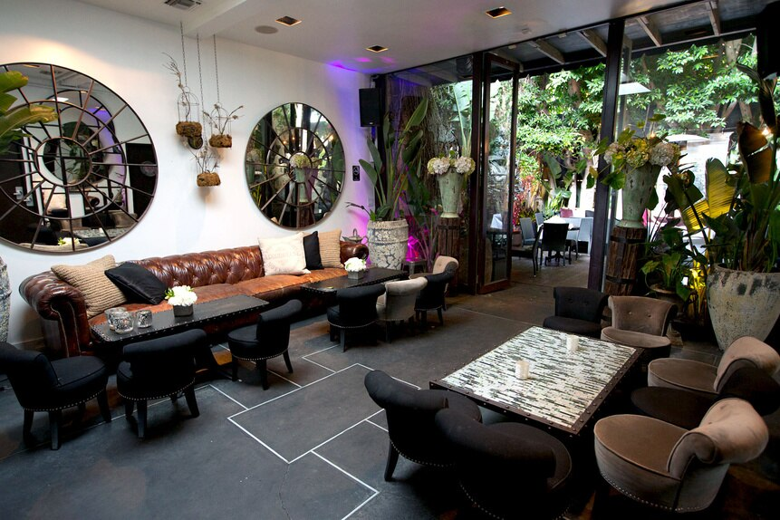
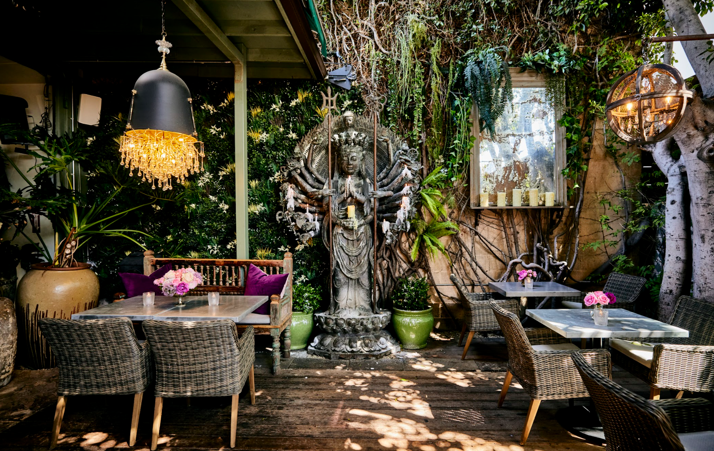

About SUR
SUR Restaurant & Lounge has been part of West Hollywood since 1998. Known for its distinctive atmosphere and connection to the television show Vanderpump Rules, SUR attracts both local guests and visitors.

Our Story
SUR was founded by Guillermo and Nathalie Zapata and later expanded with Lisa Vanderpump and Ken Todd. Its name stands for Sexy Unique Restaurant. The restaurant combines New American food with Mediterranean and Southern European influences.
Our Atmosphere
From its chandeliers and colorful seating to its garden and lounge, SUR is designed to feel different from an everyday restaurant. The decor and inviting spaces are part of what makes dining here memorable.

Dining and Hospitality
SUR focuses on providing an enjoyable dining experience with food, service, and a distinctive setting. Guests can choose between indoor dining and garden spaces.
